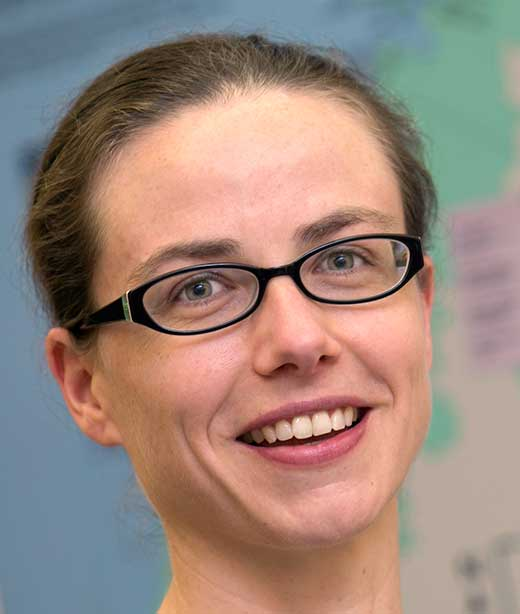
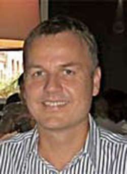

Principal Investigators
Shantenu Jha, Lead PI
Associate Professor, Computer Engineering
Rutgers University
This email address is being protected from spambots. You need JavaScript enabled to view it.
Jha's research interests lie at the triple point of Applied Computing, Cyberinfrastructure R&D and Computational Science. He is the PI of RADICAL and the lead investigator of RADICAL-Cybertools (including SAGA ), which is a community standard and is part of the official middleware/software stack of most major Production Distributed Cyberinfrastructure. Jha is a recipient of a NSF CAREER award and has won several prestigious awards at ACM/IEEE Supercomputing and the International Supercomputing Series. His current research has been funded by multiple NSF awards and US Department of Energy (DoE); his work has also been funded by US National Institute for Health (NIH), and the UK EPSRC (OMII-UK project and Research theme at the e-Science Institute).

Heather Lynch, co-PI
Assistant Professor, Ecology & Evolution
Institute for Advanced Computational Sciences
Stony Brook University
PhD, Harvard University, 2006
This email address is being protected from spambots. You need JavaScript enabled to view it.
As co-PI of the Antarctic Site Inventory project, Dr. Lynch's research is focused on uncovering the population dynamics and biogeographic distribution of penguins breeding in the Antarctic Peninsula region. Dr. Lynch has been at the forefront of using satellite imagery to map penguin occupancy and abundance across the Antarctic, and is now working at the interface of visual computing and remote sensing to automate the interpretation of sub-meter resolution imagery for tracking Antarctic wildlife. Dr. Lynch has funding from NSF and NASA and recently received one of the U.S. National Science Foundation’s prestigious Faculty Early Career Development Awards for this work.

Jaroslaw Nabrzyski, co-PI
Director, Notre Dame Center for Research Computing
Concurrent Associate Professor, Computer Science and Engineering
University of Notre Dame
PhD, Poznan University of Technology, 2000
This email address is being protected from spambots. You need JavaScript enabled to view it.
Nabrzyski is a co-PI on several NSF and NIH related awards. "DASPOS, Data and Software Preservation for Open Science," is an NSF award for which Nabrzyski and his team develop container-based architectures for preserving data and software to the point where it is possible to repeat analyses using only the archived data, software and analysis description. Nabrzyski is also a co-PI (with M. Hildreth as the PI) on the NSF award to organize a series of workshops to gauge community requirements for public access to data from NSF-Funded Research. Nabrzyski is also the PI on a BlueWaters allocation award, “Strategies for Topology and Application Aware Job Resource Management in 3D Torus-based Blue Waters System” and co-PI on an NIH award, "VectorBase: A Bioinformatics Resource Center for Invertebrate Vectors of Human Pathogens."
Allen Pope, co-PI
Research Scientist
National Snow & Ice Data Center, NSIDC
PhD, University of Cambridge, 2013
This email address is being protected from spambots. You need JavaScript enabled to view it.
Pope is a Research Scientist at NSIDC, studying the Earth’s glaciers and ice sheets with satellite imagery and other remote sensing data products. His research projects include estimating supraglacial lake depth in Greenland with Landsat-8 imagery and building a Landsat 8 mosaic of Antarctica using cloud-based satellite image processing tools. Pope is an early career glaciologist who has a strong interest in outreach, education, and scientific communication, having been extensively involved with the Association of Polar Early Career Scientists and the American Geophysical Union. Allen recently participated in the NSF-funded Intelligent Systems for Geosciences workshop and is a member of the OntoSoft Early Career Advisory Board.